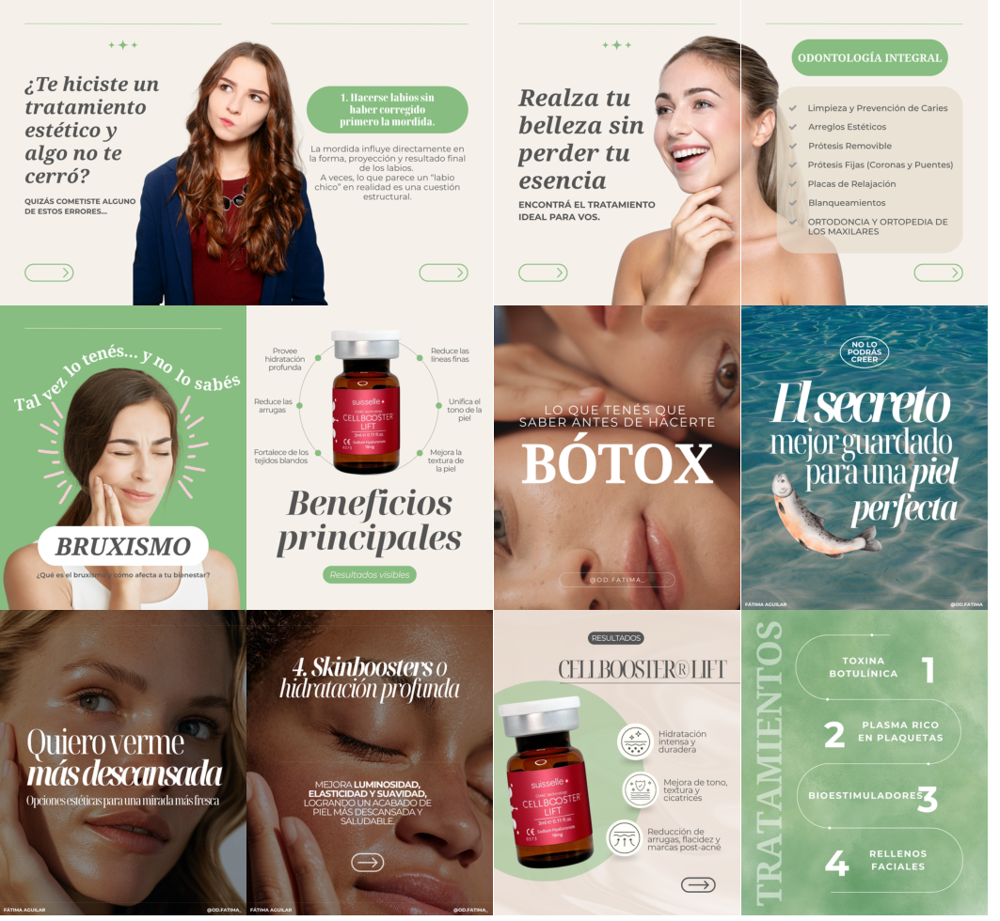

La comunicación de tratamientos estéticos necesita explicar con claridad y generar confianza.
MUY CELINA® / CASO DE ESTUDIO02 / 04
← VOLVER A PROYECTOSBELLEZA & ESTÉTICA / SELECTED WORK
Informar también puede inspirar.
Comunicación informativa y comercial para tratamientos estéticos, con un lenguaje visual cercano.

Crear contenidos educativos y comerciales que mantengan una identidad visual coherente.
Storytelling, branding visual, contenido para redes, antes y después y reels informativos.
Piezas educativas, contenidos de tratamientos y formatos de comunicación para redes sociales.